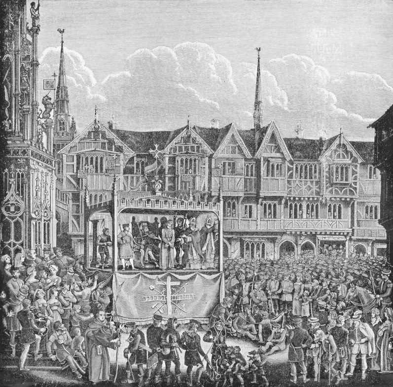
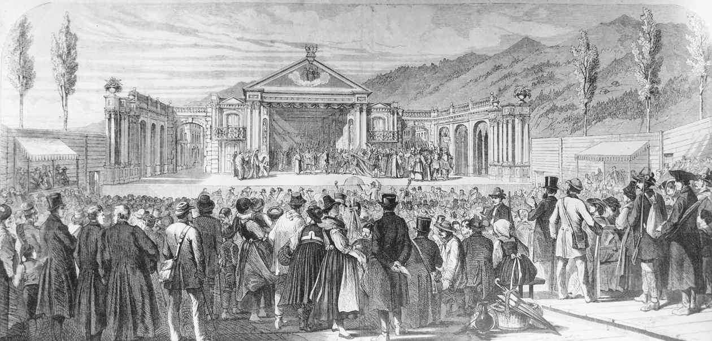

世界上鲜有与戏剧关系不甚密切的宗教。西方常常把戏剧和宗教视为关系密切但彼此有所差别的人类活动。二者虽然都有意识地涉及语词和动作的重复，但宗教是神圣的，涉及与神界的直接沟通，戏剧则是世俗的，涉及传统的故事搬演。这些不同催生了无穷无尽且基本无解的关于戏剧与宗教孰先孰后的论辩。因为受到20世纪初一批被称为剑桥仪式学家的英国古典学家的影响，现代西方总体上认为仪式发生在前，然后才产生出戏剧，戏剧即是信仰失落后仪式的余存。实际上，戏剧被看作是一种死去的仪式。尽管后来崛起的表演学把仪式和戏剧视为平行的研究对象，但总的来说，西方学术界仍对仪式和戏剧加以区分。这种现代的区别以前在西方几乎是不存在的，在世界其他地方更是如此。
鉴于戏剧与宗教本身极大的复杂性和可变性，两者都各自相应地分成无数的变体，任何试图概括它们之间关系的尝试都几乎是不可能的。虽然如此，我在本章中还是要尝试勾勒戏剧和仪式的一些总体模式，加以比较，并对这种关系中涉及的历史和地理含义提出一些看法。毫无疑问，我的尝试最好是从西方戏剧开始，因为西方戏剧可能是本书读者最熟悉的传统。在西方，关于戏剧与宗教最重要的一点是，西方的三大宗教——犹太教、基督教和伊斯兰教——都植根于一神论并遵循一个共同的宗教律法，这一律法在有时候被称作《摩西五经》的《圣经》前五卷书中都有具体陈述，它对西方宗教与戏剧的关系产生了深远的影响。摩西律法中至关重要的一点是谴责偶像，这引起了对一切形式的模仿——特别是对身体的模仿——的深深疑虑。从哲学上来说，对模仿的疑虑近似于对异教的柏拉图思想的疑虑，因为柏拉图把任何这样的行为也视为偏离善的本质和整体统一性。有关伊斯兰教因为穆罕默德谴责表现人体的行为因而从未产出戏剧的说法屡见不鲜。尽管这些说法实际上并非事实，但比较保守的伊斯兰教学者的确对戏剧抱有深深的不信任感，并常常针对具体的对象严词挞伐，保守的犹太教和基督教学者也是如此。这样的谴责通常也涉及戏剧和身体的关系，进而牵涉到戏剧与身体犯罪的关系，特别是性犯罪。可是从哲学的角度看，更为至关重要的是对模仿性复制的恐惧。
实际上，上述三大宗教都远在现代之前就形成了实实在在的宗教剧的传统。我们所知的第一部《圣经》剧（今只有残篇保留下来）出自信奉犹太教的剧作家以西结之手，他于公元前2世纪用希腊语创作了一部讲述摩西的悲剧，这多少有点儿让人吃惊。在希腊化时代以及后来的罗马帝国时代，因为戏剧更多与高压统治沆瀣一气，变得更加腐朽，更加卖力地压制如基督教徒和犹太教徒这样的少数群体，这两大宗教的先驱都一致谴责戏剧，指责戏剧作品是魔鬼的创作。
中世纪晚期，欧洲再次出现一种文学性的戏剧传统。具有讽刺意味的是，这个戏剧传统出现于基督教堂内，基督徒在特别的场合开始在教堂搬演基督教的部分仪式，从而形成了一种供形形色色的戏剧形式发展的氛围。所知最早搬演的仪式剧是《你要找谁？》（Quem Quaeritis ），大约创作于公元925年，这是一部讲述耶稣复活的短剧。已知的第一位中世纪欧洲剧作家是一位德国北部的修女，她名叫赫罗斯维莎，在10世纪较晚期模仿泰伦斯创作了六部宗教剧。在接下来的一个世纪里，基于仪式的戏剧传播到除为穆斯林占领的西班牙以外的欧洲大部分地区。这些作品首先是在教堂和修道院内由牧师和僧侣演出，到了12世纪，它们便移出教堂和修道院而进入公共空间，成为整个社区全民性的大型演出，但仍然保留着《圣经》的主题。在英格兰，这种被称为“神秘剧”的剧组，以系列的方式“连环”演出。到了15世纪末，欧洲一些地方在节日庆典时便上演连环剧。这些连环剧可能仅仅是表演耶稣的生平，抑或展示《圣经》故事的全部；有的地方，它们在围着一个中心演出区而搭起的叫作“宅邸”的形式各异的小舞台上演出。在英格兰，非系列连环剧则一般在戏车上演出，轮流在城市各处表演，这种戏车被称为“活动露天舞台”。尽管连环剧极受欢迎，但伊丽莎白女王却认为这些演出与天主教关系甚密，因而在1534年圣公会与罗马断交后，这样的宗教剧便在英格兰禁演（图3）。

图3 英格兰考文垂中世纪演出场景的现代重构
尽管神秘剧是中世纪欧洲晚期最著名、流传最为广泛的宗教剧，但同时还有其他宗教剧的通俗形式补充进来，其中最重要的是奇迹剧（或圣徒剧）和道德剧。奇迹剧并非基于《圣经》，而是取材于基督教圣徒和殉道者的生平故事及传说。大部分流传下来的奇迹剧都来自12世纪末的法国，以让·博德尔的《圣尼古拉剧》为代表。大约在公元1400年产生了道德剧，它长演不衰一直到16世纪中叶。道德剧不是讲述传统人物，而是以戏剧的形式表现抽象的品质。作为中世纪最著名的戏剧作品，《世人》便是道德剧的杰出代表。
中世纪犹太教族群的戏剧传播范围没有基督教戏剧那么广，形式也没有基督教戏剧那么多样，但几乎与基督教戏剧同时产生。普珥戏（Purimspiel ）本是源于《以斯帖记》的一种民间演出，在12世纪就确立了自己的地位，到了16世纪发展成为广泛传播的狂欢剧，从此长演不衰。就像英国的连环剧，普珥戏在17世纪为演述其他《圣经》故事的类似戏剧提供了灵感，诸如约瑟被哥哥出卖或大卫斩杀歌利亚这样的《圣经》故事，从中出现了欧洲第一个重要的希伯来剧作家——曼托瓦的耶胡达·索摩（利昂·德·索米）。德·索米本人集剧作家、演员、导演和戏剧理论家于一身，他以《约伯记》为例，声称是犹太人而不是希腊人发明了戏剧。
尽管伊斯兰教被西方学者广泛地认为敌视戏剧表演，实际上伊斯兰世界内部却存在着一个历史悠久的宗教戏剧传统，它与欧洲的宗教连环剧在很多方面有着惊人的相似。这个传统就是伊朗的“哀悼剧”（Ta'zieh）。在公元7世纪伊斯兰教到来之前，波斯就已经有追悼英雄死亡的音乐戏剧表演，这样的表演被认为给世界上伟大的宗教剧之一的哀悼剧奠定了基础。这种伊斯兰教戏剧的起源可以追溯到10世纪，但是直到16世纪初，当伊斯兰什叶派在波斯取代先前处于主导地位的伊斯兰逊尼派的时候，与什叶派联系紧密的哀悼剧才兴盛起来。伊斯兰教这两大派系几乎可以追溯到伊斯兰教的起源，它在穆罕默德死后因为继承人的问题而发生分裂。在分裂的早期，什叶派领袖侯赛因在卡尔巴拉战役中阵亡，他的战死之日从此便成为什叶派穆斯林悼亡主日。随着悼亡典礼变得日益精致复杂，这些仪式逐渐演变成一系列的短剧，搬演与这个生死存亡的战役有关的事件以及各式各样的相关素材，以类似于英格兰连环剧的形式呈现出来，只不过展演的不是耶稣受难而是侯赛因的牺牲。18世纪是哀悼剧兴盛的顶峰，尽管如此，如今世界各地的什叶派社区中仍在搬演这种戏剧。
如我们所见，即使是在西方笃信一神论的保守分子对作为模仿艺术的戏剧持有根深蒂固的怀疑的情况下，所有的这些一神教中都诞生出与宗教节庆密切相关的伟大戏剧传统。总的来说，非西方的表演从一开始就依赖于宗教习俗，在非西方世界里根本找不到基督教、伊斯兰教和犹太教中所出现的戏剧与宗教间的那种紧张关系。如同西方戏剧，东方戏剧也源于宗教习俗，对印度戏剧来说即源于印度次大陆，在那里最初的戏剧与公元1世纪初的两大宗教——印度教和佛教——交织在一起。乔达摩·悉达多所创教义的佛教出现于公元前6世纪。印度教的根源虽然可以追溯到更为遥远的过去，但发展为宗教却晚于佛教大约五个世纪，那时佛教正是日薄西山之时。就在基督教于西方立足前后的那个世纪，佛教和印度教中均产生了以梵文创作的一些重要的戏剧传统。
较之世界上的其他主要宗教，印度神话为戏剧提供了更加显明的辩护。在奠定印度宗教和文化的四部《吠陀经》问世以后，据说诸神之王因陀罗找到创造之神梵天，请求他创造一个能够使神人的生存更加快乐的娱乐形式。梵天于是就从现有的四部《吠陀经》中各提取若干要素——舞蹈、歌唱、模仿和激情，然后整合这些要素创作了第五部《吠陀经》，即戏剧。建筑之神毗首羯摩天应召构筑了一座天上舞台，圣人婆罗多被任命为上天娱乐表演的指挥。婆罗多是一位半神的人物，被认为创作了第一部专论印度戏剧艺术的著作——《舞论》。这部经典创作于何时没有定论，但可能就是在公元前140年后，那时印度的一位瑜伽大师帕坦伽利创作了《摩诃巴夏》。这是一部关于梵语语法的伟大经典著作，其中就含有迄今所知关于印度乃至亚洲戏剧的最早引述。
尽管印度古典戏剧与梵语关系紧密，印度最古老的一些戏剧——“对白剧”（sanvâdas ），却是以比较低等的“俗语”（Prâkrit）写成。“俗语”与公元前后1、2世纪的戏剧关系甚密，以至于它的几种方言被描述为“戏剧俗语”。与后起的梵剧一样，这些以“俗语”写成的戏剧也取材于同样的神话，即《摩诃婆罗多》和《罗摩衍那》的故事。这些故事与印度戏剧的关系就如同《圣经》与西方中世纪神秘剧的关系。确实，最早的“对白剧”据说就是以克利须那神或湿婆为主角载歌载舞，通常搬演的是这些神祇激动人心的一段生平。后来，随着所谓的梵剧的兴起，印度戏剧常常混杂着使用这些语言神和贵族说梵语，而来自低等社会阶层的人物则讲“俗语”方言。
尽管戏剧的神话起源于印度教，但印度最早的戏剧艺术大师有来自印度教的，也有来自佛教的。佛教哲学家和诗人马鸣于公元1世纪创作了《舍利弗的故事》，用这种通用的古典和文学语言反映了佛教的关怀。大约同时，跋娑和首陀罗迦王用梵语创作了第一批重要的印度教戏剧。印度教传统和主题主导了他们创作的印度教梵剧，却在杰出诗人迦梨陀娑的创作中达到顶峰。迦梨陀娑被认为是一位婆罗门祭司，生活于公元4世纪晚期。他最著名的作品《沙恭达罗》，如同大多数梵剧，搬演印度史诗中的某个传说，具体来说，这部作品搬演的是《摩诃婆罗多》中的一个故事。
从11世纪开始，印度日益为伊斯兰教主导掌控，这种局面常常被用来解释为什么戏剧在印度次大陆衰落甚至消亡。可是事实上，不管是一般的印度戏剧，还是具体的印度宗教剧，这样的解释都不符合实情。首先，印度教戏剧本身继续活跃在南印度的舞台上，其成分至今仍然保存在南印度的舞剧中。其次，伊斯兰教绝非如大多数西方人所认为的那样，是一股针对戏剧的消极势力。波斯的伊斯兰受难剧传播到印度次大陆，如今依然在印度次大陆的伊斯兰国家演出。再者，印度教宗教剧，如同印度教本身一样，传播到东南亚，并在那里出人意料地得到伊斯兰苏菲教团的鼎力相助，后者在把自己的伊斯兰教教义向东传播到亚洲、向南传播到非洲的过程中发挥了关键的作用。
苏菲派的宣教师，如同其他时代和地区的宣教师一样，把戏剧作为向他人宣教的一个手段。他们利用戏剧在东南亚宣教的过程尤其有趣在东南亚，苏菲派宣教师效法印度教对《罗摩衍那》的戏剧化，运用伊斯兰教的内容改造印度教宗教剧。这个传统在傀儡戏上得到最为重大的发展，如印度尼西亚的“哇扬”皮影戏。早在10世纪就有了“哇扬”皮影戏，搬演的是印度史诗里的传说故事。如此，在东南亚很多地方，戏剧是作为一种宗教习俗而引入的，它却结合了印度教和伊斯兰教这两大宗教的素材。同时，在印度本土，《罗摩衍那》史诗于17世纪在社会大众中广为流传，激发了搬演这部史诗作品的热情，“罗摩戏”便于1625年应运而生。“罗摩戏”是一种连续上演多日的大戏，它的各种变体如今不仅在印度，而且在世界各地，特别是流散在非洲和东南亚的印度语社区中上演。
尽管佛教在伊斯兰教传入之前就在其诞生地衰落了，它却传播到其他地域并在这些地方，特别是东南亚，兴盛起来。在东南亚，佛教有力地推动了戏剧的发展，而中国则成了佛教的大本营。然而，尽管如此，中国却从来没有发展出重要的佛教戏剧传统。受佛教影响的戏剧首先出现于东南亚，具体为现在的缅甸，然后传播到现在的泰国。这个区域已知历史最悠久的戏剧“诺拉戏”（nora ）兴起于14世纪，是佛教和当地的“万物有灵”思想的混合产物。第一部“诺拉戏”搬演的是羽翼被盗后成为王妃的“鸟女”的故事。很多文化中都有这个故事，但是它在传入东南亚后成为流行的《佛本生经》中的一个故事，讲述佛祖的种种前生。对佛教剧作家而言，提供宗教原材料的《佛本生经》故事所起到的作用无异于《罗摩衍那》和《摩诃婆罗多》。“诺拉戏”持续活跃在缅甸和泰国的戏剧舞台上，一直到18世纪。即使是今天，那里也仍然不时地演出“诺拉戏”。
中国早期的佛教演艺表现为仪式性的舞蹈，其中特别重要的“延年舞”兴起于8世纪，长盛不衰直到16世纪。如今，日本的一些佛寺里仍有“延年舞”的表演。传统上，佛寺里先是僧人表演舞蹈，接着是仪式性的诵读经文。尽管“延年舞”和类似的表演在中国古典戏曲的发展中所起作用不大，但是在流传到日本后却产生了深远的影响。世阿弥最先从理论上系统阐述亚洲最著名的古典戏剧——能乐，他将能乐的起源追溯到佛教的“延年舞”。人们在几部能乐中都发现了真正的“延年舞”，可是灌注能乐全身的却是“能”之哲学和原理。如同世界上其他伟大的宗教一样，佛教在发展过程中产生了多种形式和派别。在中世纪的日本，艺术家和他们的赞助者一般都倾心于禅宗，以中国宋代的画家和诗人为榜样，而世阿弥却不单从禅宗中汲取灵感，也从当时更流行的净土宗中汲取灵感，净土宗视佛为统治西方极乐世界的神灵。
尽管佛教清楚地在能乐里留下了印记，也许尤其是它关于人生的虚空和无常的教义，但日本本土的巫教和神道对能乐的形式和舞台演出也做出了重要的贡献。世阿弥自己就注意到，传统神道的仪式性舞蹈也为能乐提供了灵感。神道仪式中最重要的舞蹈——神乐，在日本自7世纪就开始表演了，庆祝太阳女神即天照大神从洞穴的黑暗中显现出来。《翁》是能乐曲目中最古老的戏，究其本质，实际上它是一个神道仪式。古典能乐的舞台后墙上画着一棵松树，就是仿照神社而来。
在日本，歌舞伎是继能乐以后出现的一个重要的戏剧形式，它虽然保留了鲜明的佛教特征，但渐趋世俗化。歌舞伎是由一位佛寺的助理 [5] 出云阿国于1605年创立的。那一年，她被送往京都表演念佛踊，以此为出云大社募集修缮款。尽管这种舞蹈是宗教性的，她却为其引入民间舞蹈和性暗示成分，并取得巨大的成功。她的由清一色女性组成的歌舞伎团变得与色情业联系甚密，以至于政府先是取缔了游女歌舞伎表演，后来连少男组成的歌舞伎表演也被禁止，最终只准许中年男性进行歌舞伎表演。这种演出传统从17世纪早期开始延续下来。歌舞伎以这样一种更加成熟的形式，更紧密地反映出日本古典戏剧舞台的宗教背景，如同能乐一样，它大量地从尘世的无常和儒家强调的个人责任中提取素材。
文艺复兴思潮和随后的巴洛克艺术席卷欧洲之时，正是东南亚的传统皮影戏“哇扬”兴起和兴盛之际。“哇扬”皮影戏是印度尼西亚文化的一个重要部分，数个世纪以来都一直宣扬伊斯兰教和印度教。15世纪，巴厘和爪哇出现了真人表演的“面具舞”。两个世纪以后，巴厘宫廷诞生了与“面具舞”相关的一种“哇扬翁”。尽管“面具舞”和“哇扬翁”都是用人来表演，但西爪哇却在17世纪产生了另一种偶戏，即“哇扬”杖头木偶戏。尽管它们之间风格迥异，这些偶戏及其五花八门的变体各自的起源都可追溯到“哇扬”皮影戏，至今都仍然保留着主要是印度教的宗教信仰。也有几种形式，特别是杖头木偶戏，与伊斯兰教密切相关。晚至20世纪60年代，有一位耶稣会的教士名叫提谟修斯·维格纽苏波罗托，他依照历史悠久的传教士传统在爪哇自创了“启示哇扬戏”进行宗教宣传。
几乎正当歌舞伎这种新颖的戏剧在日本展示一种有别于宗教色彩浓厚的能乐的世俗化风采之时，欧洲戏剧更加世俗化的文艺复兴运动进入了全盛期。中世纪传遍基督教世界的宗教戏剧直到18世纪仍在各地上演，但是很显然的是，到了16世纪晚期，欧洲绝大部分地区的宗教剧就开始销声匿迹了。只有西班牙和葡萄牙这两个国家是最重要的例外。在中世纪，除了北部部分地区，几乎整个西班牙都是伊斯兰教的天下，但是西班牙各基督教王国都在此期间搬演类似于我们上文已经讨论过的遍及欧洲大多数地区的宗教剧。到信奉伊斯兰教的摩尔人在15世纪晚期被逐出西班牙和葡萄牙的时候，伟大的中世纪宗教剧的鼎盛时代已经过去，但是宗教关怀却继续在西班牙和葡萄牙的戏剧中保持其中心地位，而这时，欧洲其他地方的绝大多数戏剧却在文艺复兴中转向更加世俗的关怀。重要的是，被西班牙和葡萄牙两国均视为戏剧开创者的胡安·德尔·恩西纳、洛佩·德·鲁埃达和希尔·维森特，这时开始了他们作为宗教剧剧作家的创作生涯。他们后来也都创作世俗剧，只有维森特不改初衷。维森特的葡语剧创作与卡尔德隆的西语剧一样令人瞩目；和卡尔德隆一样，他一生都作为宗教剧的重要剧作家，笔耕不辍。
16和17世纪，随着西班牙和葡萄牙国家政权的巩固，天主教也巩固了它在这两个国家中的地位。此时，欧洲大部分地区都被卷入到天主教和新教的纷争中。已经受到文艺复兴人文主义挑战的戏剧，因为与天主教有着历史悠久的联系而在这场纷争中蒙受损害。只有在天主教的统治没有受到挑战的西班牙和葡萄牙，宗教剧才继续兴旺，与更为典型的文艺复兴世俗剧共存共荣。西班牙和葡萄牙杰出的文艺复兴时期的剧作家都参与开创了神圣剧的传统。高产的洛佩·德·维加据说创作了400多部这样的戏剧作品，而与他同时代的卡尔德隆只创作了70多部，但名声更响。维森特众多神圣剧作品中的第一部戏创作于1510年，这部戏有一个不祥的名字“Auto de fé ”，字面意思是“信仰行动”，情节与几乎同时期的北欧道德剧《世人》颇为相似，后者寓言式地描写了世人走向死亡和得到救赎的旅程。这个短语在西班牙被用来表述对异教徒的公开审判和火刑实施，这表明在作为宗教文化表演的《世人》和《信仰行动》两部戏剧之间存在着紧密的文化联系。
这个时期西班牙和英格兰两国建起的第一批公共剧场，清楚地反映了戏剧与宗教之间的不同。伦敦的剧院，如“财富”剧院或“环球”剧院，都是给公司赚钱赢利的商业性企业，而马德里的两座公共剧场，即庭院式剧场，由宗教慈善机构出资兴建，剧场获得的利润则捐献给这些兄弟会的慈善事业。戏剧在西班牙文化中扮演着一个重要角色，这种情形一直持续到1765年皇室颁布一道禁令才结束，原因是这些戏剧变得日益粗俗化，投身启蒙运动的非宗教学生又提出了抗议。
西班牙和葡萄牙这两大最早的现代殖民强国，同样由天主教一统天下，这意味着传播天主教的宗教信仰处于殖民新世界的核心地位。这一殖民进程始于16世纪科尔特斯对墨西哥的征服。科尔特斯于1519年登陆墨西哥，他与已经和阿兹特克人交战的特拉斯卡拉的统治者并肩作战。致力于把宗教和欧洲文化传播到新世界的第一批方济各会修士于1524年抵达特拉斯卡拉。当他们在土著的仪式剧和公共庆典中发现鲜明独特的戏剧成分时，便把戏剧表演作为最有效、最和平的手段来启蒙土著人，劝导其皈依天主教。从16世纪20年代起，宗教剧就这样成为西班牙殖民计划的核心手段。1524年抵达的方济各会的一个修士假借莫托里尼亚（意即土著纳瓦特尔语中的“穷人”）之名，提供了16世纪中叶新西班牙的珍贵记录。显然，新世界最早演出的欧式戏剧为这样的戏剧作品定下了基调。这部戏描述的是末日审判，是由被任命为新西班牙第一位主教的方济各会修士安德烈·德·奥尔莫斯于1533年创作的。
在著于1541年的《新西班牙印第安人历史》一书中，莫托里尼亚详细地描述了1538年和1539年在特拉斯卡拉举办的基督教宗教节庆。这些精心组织策划的宗教节庆中有着花样繁复的游行，用土著纳瓦特尔语演出的四部神圣剧，以及讲述基督徒战胜摩尔人夺取圣城的《征服耶路撒冷》，同样用纳瓦特尔语演出。这部戏由土著人扮演摩尔人，他们在剧终时战败，在戏台上接受基督教洗礼。在这之前，这些演员实际上并未受洗，这样的演出便非凡地表现了戏剧与真实的征服行为的结合。
16世纪在墨西哥用纳瓦特尔语创作的神圣剧有11部流传下来，但毫无疑问，远远不止这区区11部剧作。尽管在戏剧结构和主题上，这些剧作都源自当时的西班牙神圣剧，但方济各会修士不仅采用当地土著人的语言，而且只要可能，就在戏剧中引用土著人的掌故并借用他们的表演方法，以便尽可能地把剧中的信息传达给观众。如此一来，新世界被征服后最初创作的戏剧作品，从一开始就是一种混合形式，但是它在新旧两个世界的基础主要都是宗教性的。墨西哥城于1597年建起了一座西班牙风格的庭院式剧场，用来表演这些新戏剧，这时距离马德里建起的第一座庭院式剧场不到二十年时间。这里上演的戏剧所涉及的范围与马德里基本一致（的确，在很多情况下演出的是完全一样的戏）——宗教性的神圣剧混合着更为世俗的喜剧。然而，宗教剧在接下来的一个世纪里仍然是演出剧目中的一个重要部分，最充分地体现在墨西哥修女索尔·胡安娜·伊内斯·德·拉·克鲁斯公演于1692年的三部神圣剧上。
新世界后征服时代的宗教剧的另一个主要来源是耶稣会传教士所创作的作品。他们于1572年抵达新世界，稍稍比方济各会修士晚一点，在致力于以戏剧传教方面较之方济各会修士毫不逊色。据估计，1575年和1600年之间，仅墨西哥城一地的耶稣会学校就有52部宗教剧搬上舞台。耶稣会传教士于1568年抵达秘鲁，在那里，他们比方济各会修士更加热衷于演出宗教剧。墨西哥城的庭院式剧场建成不久，1605年利马就跟着建起了一座公共庭院剧场。与方济各会修士一样，耶稣会传教士也在秘鲁创作了不同语言和文化杂糅的戏剧，混合了西班牙和当地奎查恩人的语言与文化。但是在墨西哥城演出的戏剧几乎清一色地讲的是拉丁语，而不是当地的土著语言。这一形式遵循着欧洲的耶稣会已经确立起来的模式，从一开始就对戏剧有着强烈的兴趣，但这种兴趣与其说是要改变观众和演员的信仰，倒不如说是为了教育观众和演员。尽管戏剧是西班牙方济各会在新世界宣教计划的核心部分，但戏剧并非方济各会特别感兴趣的一种艺术形式。他们的态度与耶稣会很不一样，特别是在16和17世纪，那个时代耶稣会的要务之一就是宗教剧的创作和演出。
耶稣会创立于1534年，仅仅14年之后，意大利的墨西拿就创办了第一所耶稣会学校，开启了耶稣会重视教育的传统，并最终把这个传统传遍全世界。仅在三年后，墨西拿耶稣会学校就上演了它的第一部戏剧作品。每年至少推出两部拉丁语戏剧作品遂成为墨西拿耶稣会学校的惯例，这个惯例也为后来的耶稣会学校所遵循。在接下来的一百年间，耶稣会在欧洲大陆绝大部分地区建立了大约五百座学院，据估计他们在1650年至1700年之间演出了至少十万台戏，这个数量在17世纪欧洲戏剧的整体产出中引人注目，可是却大多被戏剧史学家忽略而未加以研究，这说明了大体上为世俗性的现代欧洲戏剧叙事在戏剧史上的地位有多么重要。观看耶稣会戏剧演出的绝不仅限于耶稣会学校那些为数不多且经过挑选的学生。贵族们也频繁观看演出，而且有时还在重要的公共节庆搬演戏剧，特别是在维也纳，引来成千上万的观众。
葡萄牙是另一个早期的殖民强国，它在新世界的戏剧活动虽没有西班牙的开展得那么广泛，却以相似的方法实施。在巴西率先开展戏剧活动的关键人物是何塞·德·安谢塔·利亚雷纳，他是首批抵达巴西的耶稣会传教士中的一员，曾在葡萄牙设立于科英布拉的最早的耶稣会学院接受过培训，于1553年随同第一批耶稣会传教士抵达巴西。在此之后的16世纪的大部分时间里，他与当地的土著图皮人合作，研究图皮语并最终以图皮语写作。他在宗教和世俗两个方面深受维森特传统的影响，在创作的很多戏剧作品中把图皮语与拉丁语、西班牙语和葡萄牙语结合起来。
耶稣会传教士也将欧洲的宗教剧传播到南亚。圣弗朗西斯·哈维尔于1542年在位于印度东海岸的葡萄牙殖民地果阿创建了一所耶稣会学校。耶稣会传教士于1602年抵达印度以南的斯里兰卡，稍后把戏剧活动扩展到那里。一个世纪以后，这些戏剧仍广受欢迎，这时耶稣会传教士雅科梅·贡萨尔维斯创作了一部耶稣受难剧。这是一部不同于寻常的木偶戏，木偶人物是由处于其站立的地毯下面的人操纵的。这种不同寻常的形式在斯里兰卡一直流行到19世纪初，那时真人演员取代了木偶表演。
虽然大多数戏剧史学家对16至18世纪耶稣会戏剧的国际化和影响力不怎么重视，但新教改革派的宗教剧更被他们所忽略，尽管它在余下一个世纪的中欧，尤其是德国，始终处于剧坛的主导地位。新教的剧作家受到马丁·路德的公开祝福和鼓励，从宗教改革运动伊始就创作宗教题材，主要是《圣经》题材的戏剧作品，以此进行道德说教并加深人们对《圣经》的了解，这对新教的宗教改革运动至关重要。然而在英格兰，宗教剧其时刚刚遭禁，因而尚未切断与天主教的联系，而英国清教徒于17世纪40年代废黜国王取得政权，也把戏剧视为伤风败俗。他们把持国政直到1660年，在此期间，新教国会关闭了所有剧场并企图在英格兰废除戏剧。
路德与英国的新教徒一样也对专注于基督生平的受难剧持怀疑态度，但对搬演《旧约》更不关切，而它却成为中欧新教戏剧的焦点。约瑟的故事特别为新教徒所垂青，因而成为这一新传统的第一部重要戏剧作品的主题。这部宗教剧创作于1635年的荷兰，颇具讽刺意味的是，它出自一位名叫科尔内留斯·克劳克斯的耶稣会教士之手。在接下来的一个世纪里，无数的新教剧作家效仿克劳克斯，其中约瑟、苏珊娜和友弟德是特别受欢迎的主题人物。这些新教宗教剧的演出不久就走出校园而进入公共场所。一些公共场所的演出气势恢弘，连演数日，登场人物数以百计，而观众则数以千计，与中世纪最考究的连环剧不相上下。汉斯·萨克斯今日主要作为一位通俗滑稽戏的剧作家被人们铭记，据说，他将半部以上的《圣经》改编成宗教剧，总数达150多部。
已知斯拉夫国家的第一部戏剧是仪式剧，很显然是在16世纪前的某个时候从拜占庭传入的。特别受欢迎的是“火窑剧”（Furnace Play），是根据尼布甲尼撒和希伯来孩童的《圣经》故事改编而来的。保守的东正教声称，如同西方的宗教剧，这些“火窑剧”是正经的教会仪式而非真正的戏剧。但第一部在俄罗斯被称为戏剧的作品就是《尼布甲尼撒王传》，为西米恩·波罗茨克所创作，这很难说是件巧合的事。西米恩是一位耶稣会教士，17世纪末作为御用诗人供奉朝廷。很显然，他从这个家喻户晓的故事中提取素材创作了这部供耶稣会学校表演的戏剧。他的同时代人，莫斯科的格雷戈里，也创作了关于耶稣会所钟爱的以斯帖、多俾亚和友弟德故事的宗教剧。
17世纪，法国戏剧在欧洲剧坛占据主导地位，其地位直到浪漫主义崛起后才受到挑战。此时的戏剧虽然深受希腊古典戏剧模式和主题的影响，但大体上是世俗性的。虽然天主教会在中世纪末就基本上不再与戏剧有任何关系，但法国的天主教仍普遍反对这种艺术形式以及任何相关人士。1641年，法国国王路易十四将公民所拥有的法律权利扩展到法国的演员艺人，但法兰西教会却仍然拒绝他们领受从洗礼至葬礼的一系列圣礼。众所周知，剧作家莫里哀一生都在与教会抗争。
然而，即使是在这样不友好的环境下，这个时期法国最杰出的剧作家让·拉辛却创作了大量的宗教剧。拉辛曾在詹森教派建立的一所学校接受教育，它是一个不折不扣的天主教改革运动中的教派。尽管他的导师们都反对戏剧，对他决意成为剧作家加以谴责，文论家一般都认为，即便拉辛作品的主题都取自希腊和罗马经典，拉辛对人类激情中邪恶作用的研究却浸透着詹森教派的思想。这与经典的能乐有些相似，能乐的主题虽然源自他处，却深受佛教的影响。更加别具一格的是，拉辛晚年从戏剧家转型成为皇室史官后创作的两部晚期戏剧作品均取材于《圣经》。这两部作品是应女王的请求而创作的，供她所资助的圣西尔女修道会学校的学生演出之需。第一部是《以斯帖》，创作于1699年，它与数不清的犹太传统的“普珥戏”一样，取材于《旧约》；第二部是《亚他利雅》，创作于1691年，讲述的是一位出自《列王纪下》的鲜为人知的王后，但这位王后毁灭性的激情却与拉辛早期剧作的中心人物如出一辙。
18世纪的欧洲没有产出像早先那么多的典型的宗教戏剧。保守的天主教会一如既往地反对戏剧，1777年竟还呼吁巴伐利亚选帝侯禁演自中世纪以来就长演不衰的耶稣受难剧。此外，启蒙时期的思想家一般都觉得宗教的神秘主义与他们所献身的理性主义格格不入。启蒙思想家鲜有创作明显关涉宗教主题的戏剧，即便是这些罕见的作品，也要么如伏尔泰在1741年推出的《狂热》那样谴责传统宗教，要么像莱辛发表于1779年的《智者纳坦》那样发表宽泛的人文主义宣言，将所有宗教信仰都并入一种温文尔雅的启蒙主义仁爱之中。即使在西班牙，长期垄断剧坛的神圣剧也在1765年因皇室下达的一纸禁令而废止，虽然这些神圣剧在西班牙的小城镇和新世界继续上演。实际上，它们在墨西哥和其他地方从未销声匿迹，特别是以牧羊人和圣诞剧的形式如今依然展演在舞台上。
可以说，日本也与欧洲同时兴起了非宗教戏剧，即日益流行的更加世俗化的歌舞伎和随后的偶戏文乐。但是，能乐仍然在日本剧坛占据着重要地位，而且保持着其鲜明的宗教色彩。亚洲其他地方，宗教和戏剧依然紧密交织。在东南亚，佛教、印度教，甚至是伊斯兰教的宗教元素也继续处于当地主流戏剧活动，即各色各样的舞剧和傀儡戏的核心。18世纪也目睹了波斯的“受难剧”，即哀悼剧的兴起，如前文所述，它是伊斯兰宗教剧最重要的范例。这一系列宗教剧的兴盛在18世纪晚期和19世纪早期达到顶峰，之后依然深受欢迎，以至在1876年兴建了一座最大的专演哀悼剧的剧场，即德黑兰国家剧院。这座剧院可容纳四千名观众，很多人认为比代表着当时最奢华建筑的欧洲各大剧院还要精致高雅。尽管如很多戏剧史学家所言，哀悼剧在结构上与欧洲中世纪的宗教连环剧颇为相似，但前者却晚于后者几个世纪，这意味着在哀悼剧兴旺发达之际，正是欧洲宗教剧被启蒙运动和19世纪兴起的实证主义及科学主义赶下舞台之时。尽管以伊朗为中心，哀悼剧却传播到印度和海湾国家，并最终传到加勒比海地区。所有这些地方今天仍在搬演着哀悼剧。
然而，从全球来看，戏剧与宗教的分离在19世纪达到最高点。也正是在这个时期，始于15世纪的欧洲殖民主义扩张到极致，势力遍及世界各地。从西班牙征服新世界起，欧洲戏剧的输出就成为殖民计划的一个重要组成部分。而随着欧洲转向世俗化，19世纪输出的戏剧被视为以世俗的启蒙主义理想教化殖民地人民的手段，而不再是改变他们宗教信仰的工具。15世纪的传教士输出卡尔德隆的神圣剧，而19世纪的教育家则输出易卜生的社会剧。
但随着殖民主义时代的逝去，正是这一世俗主义孕育出了一股对宗教剧的新的兴趣。宗教戏剧在后殖民世界里被广泛地看作受到殖民主义者压制的本土艺术形式，恢复这一艺术形式对重新寻求文化认同具有重要意义。毫无疑问，这一转变最著名的例子就是尼日利亚剧作家沃莱·索因卡的作品，他不间断地吸收约鲁巴宗教元素，用于自己戏剧的主题和结构创作。尼日利亚一直是这类作品的一个中心，而相似的例子充斥着后殖民时代的剧场。印度的吉里什·卡纳德回归印度史诗来创作以当今事务为题材的戏剧作品，而成立于1980年的新西兰毛利剧场一直致力于运用毛利人的传统表演空间和宗教习俗来丰富戏剧。
宗教在西方经历了一个多世纪的边缘化后，作为戏剧体验的一个重要部分重新登上了20世纪的舞台，这始于19世纪90年代的象征主义运动。从重新激发对传统宗教特别是天主教的兴趣，到着迷于各种各样的非传统神秘仪式，象征主义广泛诉求于非世俗化的宗教仪式以挑战现实主义戏剧中的世俗性。斯特林堡是象征主义的一位领军人物，也是为表现主义提供灵感的剧作家。他创作了一系列的作品，如发表于1898年和1904年间的《到大马士革去》三部曲，这一作品系列虽然别具一格，但毫无疑问是宗教性的。象征主义运动的另一位领军人物——威廉·巴特勒·叶芝，深受日本能乐的影响，将能乐的宗教意识和审美引入现代西方戏剧。
20世纪初的其他重要剧作家，虽然没有拥抱象征主义的美学观，但仍然抱有与象征主义者同样的愿望，即让戏剧回归其宗教根本。对法国神秘主义作家保罗·克洛岱尔来说，戏剧的宗教根本就是天主教，而在T.S.艾略特看来，这个宗教根本是圣公会，可是他们每一个人都证明了具有现代背景和现代人物的戏剧也可以是扣人心弦的宗教剧。19世纪末20世纪初神秘主义运动的参与者标新立异，却同样致力于宗教戏剧，而象征主义从其中汲取了很多灵感。阿莱斯特·克劳利于1910年创作了《厄琉息斯仪式》，力图恢复这一古希腊神秘仪式并将其搬上伦敦的戏剧舞台；同年，鲁道夫·斯坦纳在瑞士建起了一座剧场——神庙，取名“歌德堂”，专供现代神秘剧的演出，如今那里仍在上演神秘剧。神秘主义和戏剧之间的联系贯穿整个20世纪，随着安托南·阿尔托充满玄幻的著述的广泛传播，它们在20世纪60年代引起极大关注。因为阿尔托和深受波兰天主教神秘主义影响的波兰导演耶日·格洛托夫斯基的缘故，一种强烈的宗教和玄幻元素在20世纪60年代融入西方的实验戏剧。
尽管西方的主流戏剧依然以世俗为导向，先锋派的这些宗教运动却为一些宗教色彩鲜明的戏剧登上商业大剧场的舞台开辟了道路。颇受象征主义影响的尤金·奥尼尔在其众多的作品中就有几部这样的戏剧；诗人阿奇博尔德·麦克利什1958年推出的剧作《约伯记》，以现代人的眼光重新解读《圣经·约伯记》，在纽约获得巨大成功；1962年，帕迪·查耶夫斯基取材于《圣经·士师记》的剧作《基甸》也轰动一时。让人更加吃惊的是两部基于基督生平故事的摇滚歌剧所获得的巨大成就一部是斯蒂芬·施瓦茨1971年创作的音乐剧《福音》，另一部是安德鲁·劳埃德·韦伯和蒂姆·莱斯1973年合作的《耶稣基督超级明星》。显然，这两部音乐剧都是20世纪60年代先锋戏剧新的心灵主义的产物。
宗教剧在20世纪末取得了另一个同样令人瞩目的进展，那就是国际上对有意模仿中世纪耶稣受难剧的演出再度产生兴趣。最著名也是历史最悠久的莫过于德国奥伯阿默高小镇搬演的耶稣受难剧，这个传统可以追溯到1642年。自那以后，起初是每年公演一季，现在是每十年一季，这期间除了偶尔取消外，便一直长演不衰，公然藐视1777年的禁戏令。国际上第一次组团赴奥伯阿默高小镇观看演出是在1870年，到19世纪末，小镇的演出吸引了成千上万的观众（图4）。也是在19世纪末，人们对遭受科学实证主义排挤的人性的精神层面再度产生兴趣；在这种情况下，上演像奥伯阿默高小镇的耶稣受难剧便不仅具有历史意义，也具有社会文化意义。引人注目的是，热衷于这种戏剧的首批现代人中有一位是大名鼎鼎的数学家和达尔文主义者——卡尔·皮尔逊。他在19世纪90年代对当时和中世纪的德国受难剧产生了浓厚的兴趣，不仅为其作为历史进程一部分的重要性而争辩，也为其能够为一个日趋物质化的社会提供精神层面的需求而疾呼。皮尔逊关注的是德国的耶稣受难剧，这是因为在他为受难剧奋笔疾书之前的数十年间，不仅是奥伯阿默高小镇，德国巴伐利亚和奥地利蒂罗尔的一些城镇也重建了这种中世纪的戏剧形式，引起越来越多的国际关注。到了1930年，这个地区兴起了二十多个这样的戏剧节，如美国的《戏剧艺术》等著名学刊把这些戏剧节作为世界剧坛的一个重要组成部分加以报道。

图4 1860年奥伯阿默高小镇搬演耶稣受难剧
到那时，现代受难剧的概念在欧洲之外的地方得到确立。墨西哥最早的现代受难剧演出地是墨西哥城一个叫作伊斯塔帕拉帕的郊区。如同两个世纪以前德国奥伯阿默高小镇的市民那样，伊斯塔帕拉帕人于1843年把受难剧搬上舞台，以感谢主耶稣把他们从一场瘟疫（这次是霍乱）中拯救出来。在地球另一边的斯里兰卡，那些由耶稣会传教士在18世纪伊始编排的受难剧，至今仍在一些沿海市镇演出，这些演出因为国际上对这类戏剧新生的兴趣而再次焕发生机。有一位名叫劳伦斯·佩雷拉的作家甚至前往奥伯阿默高小镇，为他1923年引入波拉雷萨的一部新斯里兰卡受难剧寻找灵感，这部受难剧是斯里兰卡第一部由真人扮演耶稣的戏剧作品。在1930年前后的美国，20世纪初驱动爱国巡演活动的社区精神促使一些社区搬演欧式的受难剧，演出次数在整个20世纪一直攀升。其中最著名的是1932年兴起于南达科他州的“黑山”受难剧，由来自德国吕嫩的移民创作，他们声称自己是在重现自1242年就在吕嫩演出的戏剧。
萨拉·鲁尔2010年推出的《受难剧》，气势恢宏地表现了受难剧连绵曲折的历史。这部三幕剧展演了不同时代和不同地域的受难剧演出，分别是16世纪的英格兰、1934年的奥伯阿默高小镇和1984年的南达科他州。英国没有参与第一波受难剧的复兴运动，但是约克和切斯特重新把中世纪的连环剧搬上舞台却是1951年“英国节”的重要组成部分，特别是约克，该市从此便一直保持着这样一个重要的现代传统。
20世纪30年代初，受难剧再次广泛地激起人们的兴趣，与此密切相关的是1937年在纽约上州克谟拉山建立的一个巡游演出剧团，这是美国巡游剧团中最负盛名的一个。克谟拉巡游剧是一种与英格兰中世纪的连环剧颇为相似的宗教历史剧，搬演从创世到基督生平，再到基督后来在新世界宣教的故事。这种修正主义的基督故事是摩门教的核心。摩门教是唯一一个在美国发展起来的重要宗教，也是19世纪早期在美国开展的众多宗教运动中最成功的一个，而19世纪初是一个被称为“第二次大觉醒”的宗教狂热时期（“第一次大觉醒”发生于一个世纪前，这次“大觉醒”把福音和复兴运动引入美国和英国的新教）。摩门教将本门宗教的创立追溯到写于金板上的圣文《摩门书》，它由其创始人约瑟夫·史密斯在天使的指引下发现。摩门教徒后来因为遭迫害而一路西迁，在犹他州定居下来，犹他州至今仍然是摩门教的根据地。在摩门教建立后的一个世纪，即20世纪20年代，摩门教徒开始举办仪式，搬演短剧描述史密斯在纽约上州发现金板《摩门书》的那段宗教史。1937年首次上演了一部展示《圣经》时代以来教会史的重要戏剧，这部巡游剧至今仍长演不衰，成为美国最著名的宗教巡游剧之一。毫无疑问，它的初演在部分程度上受到当时美国举国推崇的受难剧的影响。
不无讽刺的是，就在本书撰写的2013年，百老汇最受欢迎的演出是音乐剧《摩门书》。这是一部针对摩门教及其历史的讽刺剧，该剧不仅多处指涉克谟拉巡游剧，而且还拙劣模仿了在非洲传教的当代摩门宣教师沿袭四百多年前在新西班牙宣教的耶稣会传教士传统而创作的一部宗教剧。尽管音乐剧《摩门书》是一个特例，它却反映了宗教在当代西方世界剧坛，特别是盎格鲁——撒克逊剧坛的地位。传统的受难剧常常迎合观光客的兴趣，也同样符合宗教人士的品味，尽管它仍受欢迎，但今天在各大剧场上也能看到以艾略特和克洛岱尔为代表的那种当代宗教剧。以《福音》和《耶稣基督超级明星》这两部音乐剧为代表的新时代复兴主义戏剧也是青黄不接，虽然这两部作品还不时地作为阶级性演出作品被搬上舞台。宗教没有消失，而是以修正主义的面貌出现。这反映了一个怀疑论时代的幻灭，这样的幻灭可以在托尼·库什纳于1993年创作的《天使在美国》一剧中看到。这部近几十年来在美国声誉最高的史诗剧大量取材于摩门教，描绘了一个上帝离去的宇宙。爱尔兰作家科尔姆·托宾最新创作的《玛利亚的自白》于2013年搬上舞台，该剧讲述了耶稣的母亲玛利亚在晚年埋怨他儿子的门徒企图把一个凡人变成一尊神。
《天使在美国》和《玛利亚的自白》这两部戏都反映了时下西方戏剧对宗教的态度，这种态度与其说是恰如其分的批评，倒不如说夹杂着几分怀旧的情绪回首往昔，那时传统的宗教信仰提供了一个更加舒适和安全的宇宙，而这样的传统信仰今天已不再为现代怀疑论所接受。像所有的怀旧之情一样，这并非一幅精确的图画，可在21世纪来临之时，宗教和戏剧在西方各大剧院总体上仍然是分离的。然而，晚期资本主义极度的非宗教性运作引发了全球危机，在此情况下，卡尔·皮尔逊的评论颇值得我们回味一番。他在一个世纪前就敦促当时的社会到受难剧的精神中去寻觅良方，以矫治世俗的资本主义对于那个社会里最弱势成员的残酷的冷漠。